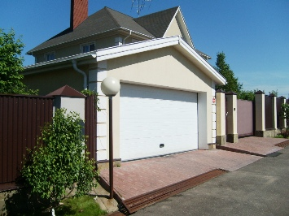
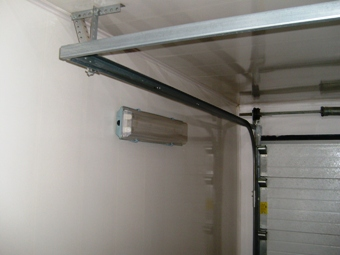

Частный электрик, недорого и качественно.
Тел. 8 904 642 08 57 Николай.

Электромонтаж в гараже.
Цени ниже! Скидки 15 %
Для большинства мужчин гараж – это не только место для хранения автомобиля, но и подсобное помещение, мастерская, склад запчастей, инструментов, а еще место, где можно просто расслабиться. Исходя из этого освещение здесь не роскошь, а необходимость.
Электромонтаж – дело не очень сложное, но для опытного электрика. Поэтому не стоит экономить и рисковать, а лучше пригласить частного мастера, который знает все нюансы электропроводки данного помещения и сможет выполнить ее качественно и в сжатые сроки. А Вы после этого будете наслаждаться освещением, а не искать нужные запчасти с фонарем в руках.
О себе:
Меня зовут Николай, я профессиональный электрик со стажем (более 15 лет). Профессионально и качественно выполняю весь спектр электромонтажных работ, начиная от установки выключателя и до полного монтажа электрической проводки квартиры. Имею все необходимые допуски и лицензии. В работе использую только проверенные временем материалы и инструменты. В совершенстве владею всеми способами проводки. Помогаю заказчику сделать закупку нужных материалов и составляю смету. Выполняю монтаж в соответствии с нормами СНиП и ПУЭ, учитывая все требования клиента.
Сколько стоит электромонтаж в гараже?
|
Стоимость электромонтажа под ключ. |
10 000 рублей. |
Нюансы монтажа гаражной электропроводки:
Здесь на первое место выходит безопасность и функциональность, а вот эстетичность идет на втором плане. Объяснить это просто: в гараже редко кто бывает кроме хозяина, а для него в первую очередь важна практичность. Можно поспорить, а как же скрытая проводка? Скрытность – это требование, скорее всего, не эстетики, а безопасности: кабели, спрятанные внутри стен, надежно защищены от различных повреждений.
Для того, чтобы повысить безопасность работы с электроустройствами, рекомендовано на вводе в распределительный щит сделать отдельное заземляющее устройство.
Поскольку гараж относится к строениям с повышенной степенью опасности, все розетки, выключатели и светильники должны иметь высокий класс защиты от влажности и пыли. Лучше всего, если это будет IP44.
В случае, когда планируется в гараже создание настоящей мастерской, необходимо позаботиться о трехфазном вводе.
Разработка схемы.
Для того чтобы все сделать правильно и не ошибиться при электромонтаже а гараже, необходимо сделать схему или план, на который подробно нанести места размещения розеток, выключателей и электрокабелей. Это во многом упростит выполнение работы.
Основные моменты:
- нанести все элементы и соединить их исключительно прямыми линиями;
- соединение начать от распределительного щита; - необходимо отметить способы подключения каждого из них;
- следует учесть, что расстояние до потолка от проводов должно быть не меньше 100 мм, от розетки до пола – 500 мм, а общий выключатель располагаться с правой стороны на высоте 1500 мм;
- перенести схему проводки на реальные стены.
Монтаж гаражной электропроводки.
Состоит из двух этапов:
- монтаж наружной проводки (от линии электропередач до входа);
- внутренний монтаж.
Важно: и первый, и второй этап должен выполнять электрик, имеющий доступ к работе с высоковольтными линиями.
Освещение подвала и смотровой ямы.
Не один хозяин гаража не сможет обойтись без смотровой ямы. Да и подвал никому не помешает. Как для первого, так и для второго случая необходимо освещение. Важно запомнить, что использовать для этих целей обычные электроприборы нельзя, это опасно для жизни.
Напряжение в этих местах должно быть низковольтным! Поэтому и приборы для работы здесь должны быть рассчитаны на маленькое напряжение.
Правила безопасности:
- проводить любые работы следует при полном отсутствии напряжения;
- электроинструмент должен быть целым, без оголенных проводов;
- обычный инструмент использовать только с изолированными рукоятками;
- для высотных работ использовать специальные помосты или козлы;
- не торопиться и всегда помнить о правилах безопасности.
И напоследок: отнеситесь к этому дело ответственно. Ведь желание сэкономить и сделать монтаж своими силами, может вывести всю электрическую сеть из строя, а при скрытом типе монтажа, повлечь за собой тяжелые последствия. Не рискуйте, доверьте это профессионалу. А я, со своей стороны, обещаю сделать монтаж проводов в гараже качественно, быстро и надежно.
Обращайтесь!
 Поменять проводку в квартире.
Поменять проводку в квартире. Сколько будут стоить материалы.
Карта сайта.
Замена электропроводки в панельном доме.
Расценки на электропроводку квартир.
Замена проводки в хрущевке.
Электромонтаж в частном доме.
Электрика в загородном доме.
Сколько стоит замена электропроводки в двухкомнатной квартире?.
Сколько стоит проложить проводку в 3 ком квартире?
Сколько стоит проложить проводку в четырех комнатной квартире?
Сколько стоит сделать внутреннюю проводку?.
Стоимость штробление стен.
Установка люстр и светильников.
Замена электропроводки в панельном доме.
Электромонтаж проводов в бане.
Электрика в загородном доме.